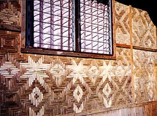
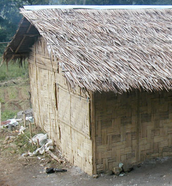

Bamboo Homes in Southeast Asia

While traveling in Southeast Asia in the year 2000, I was enchanted by the many designs incorporated into the woven bamboo panels used to construct the walls of homes and buildings on the island of Flores in Indonesia.  This is in contrast to the two or three common designs in use on other islands in Indonesia, as well as in Malaysia and Southern Thailand. Discussions with other travelers who had traveled extensively all over Southeast Asia indicated the intricate designs might be unique to Flores, the Flower Island. |

| next: Bamboo Homes on Flores |
| Trav-E-Log 2005/2006 | ||
| Other Special Subjects: |